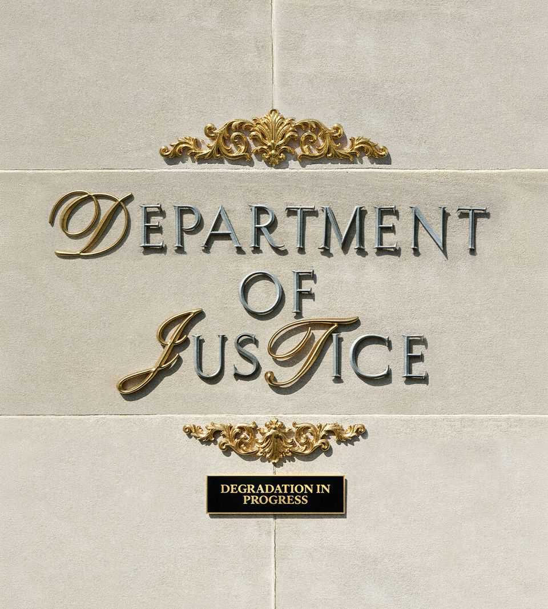

Donald Trump’s gutting of the Department of Justice
What the degraded institution means for America
July 16th 2026

THE PURsUIT of enemies grabs all the attention, and for good reason. Markets were shocked to see President Donald Trump set the Department of Justice (DoJ) on Jerome Powell when he was still the chairman of the Federal Reserve. Champions of press freedom cried foul last week when the department issued subpoenas to New York Times journalists for explaining the truth about Qatar’s gift of a jet to the president. But Mr Trump’s grievance agenda isn’t the half of it.
In a sign of how much he treats the department as his own personal law firm, he wants his actual lawyer to become attorney-general. Senate hearings begin this week for Todd Blanche, who is currently the acting attorney-general. Those on Mr Trump’s enemies list are not the only ones who should be worried. The president is also inflicting less-noticed harms on the DoJ that are as bad as the attention-grabbing ones. The damage is likely to be profound.
The DoJ is the government’s lawyer, but it also serves as the guardian of the law, especially since Watergate. In 2019 Bill Barr, then Mr Trump’s pick for attorney-general, said that Americans “have to know that there are places in the government where the rule of law—not politics—holds sway” and that the Department of Justice “must be such a place”. Mr Trump has no time for that. Less than halfway through his second term, he has turned the DoJ from an arm of the law into a muscular limb of the presidency.
For a start, he has dramatically redefined the department’s priorities, which is legitimate, often by setting goals that blur policy and politics, which is not. Health-care fraud is being chased with particular zeal in states run by Democrats, such as California and Minnesota, where it can be used to discredit Mr Trump’s opponents, including the states’ governors, Gavin Newsom and Tim Walz.
The DoJ is also an effective tool for pursuing his political agenda. Election fraud is consuming ever more of its resources—not because it is a real problem, but because it is a presidential obsession. The DoJ has sued states for access to their voter rolls. In January the FBI seized hundreds of boxes filled with ballots and other documents in Georgia’s most populous county, part of an investigation of the presidential election in 2020. More recently, some 260 FBI analysts were dispatched to pore over Georgia’s files, with a deadline to review records by July 17th. At the very least, this will shake voters’ faith that elections are trustworthy—indeed, that may be its sinister design.
Matters of genuine public interest are left to languish. About a quarter of the DoJ’s lawyers have left. Divisions that investigated cryptocurrency fraud and public corruption have withered. Financial-fraud indictments by prosecutors at DoJ headquarters and in Manhattan are down by 30% from the ten-year average. About 300 special agents who specialise in national security have quit the FBI, taking decades of experience in counterterrorism and cyber-warfare with them.
The department has also become more chaotic. Too often, cases encounter problems in court, though it is hard to distinguish sloppiness by DoJ staff from deliberate ill-intent. Nearly 100 times in Mr Trump’s first 14 months, the DoJ supplied courts with inaccurate information. It is quite something for the state to lose the benefit of the doubt in its own courtrooms.
More than 61,000 petitions from detained immigrants have bogged down courts and frustrated judges and federal prosecutors, who have moved lawyers from criminal divisions to help. By September last year, about a fifth of FBI agents had been diverted to immigration enforcement.
Meanwhile, the president’s powers are increasing. In Trump v Slaughter last month the Supreme Court ruled that the president could sack leaders of semi-independent agencies, such as the Federal Trade Commission (FTC) and the Securities and Exchange Commission (SEC). That gives the president the capacity to force agencies to work in league with the DoJ. Imagine a co-ordinated campaign of pressure, in which the DoJ opens an antitrust inquiry, the FTC explores consumer fraud and the SEC investigates corporate disclosures.
Unfortunately, the permanent appointment of Mr Blanche is unlikely to mark an improvement. He has done as much as anyone to advance Mr Trump’s agenda of prosecuting his enemies and protecting his friends—a powerful combination for encouraging people to comply with Mr Trump’s wishes. Under Mr Blanche, the DoJ has recently threatened state election officials with criminal prosecution if they knowingly let non-citizens remain on voting rolls.
Democrats and more than 1,200 former DoJ lawyers have demanded that the Senate reject Mr Blanche’s nomination. The Senate now has the choice of confirming him, and thereby seeming to endorse Mr Trump’s broader agenda, or blocking him in a rare rebuke to the president. Unfortunately, a rejection may not accomplish all that much. Mr Trump can retain Mr Blanche as acting attorney-general for months or nominate someone just as pliable.
The best Americans can hope for, in the next two years, is that courts stand firm. So far they have generally checked the DoJ’s worst impulses. On July 7th a federal judge blocked the department’s effort to subpoena the names of election workers in Georgia. On July 13th another federal judge nullified a settlement organised by the DoJ in response to a civil case brought by Mr Trump that would have protected the president and his family from tax audits.
Even if Americans elect a president who wants to restore the DoJ, the damage will be hard to reverse. Mr Trump’s acolytes would see the ejection of his partisan lawyers as a witch hunt that justifies the next purge when they take back power. Once the arrival of any new administration routinely entails a fresh round of sackings, professionals who care about the rule of law will think twice about signing up. After Watergate, statesmanship and a bipartisan effort were needed to create the modern DoJ. Today the stakes are as high, and the task is harder. ■
For subscribers only: to see how we design each week’s cover, sign up to our weekly Cover Story newsletter.